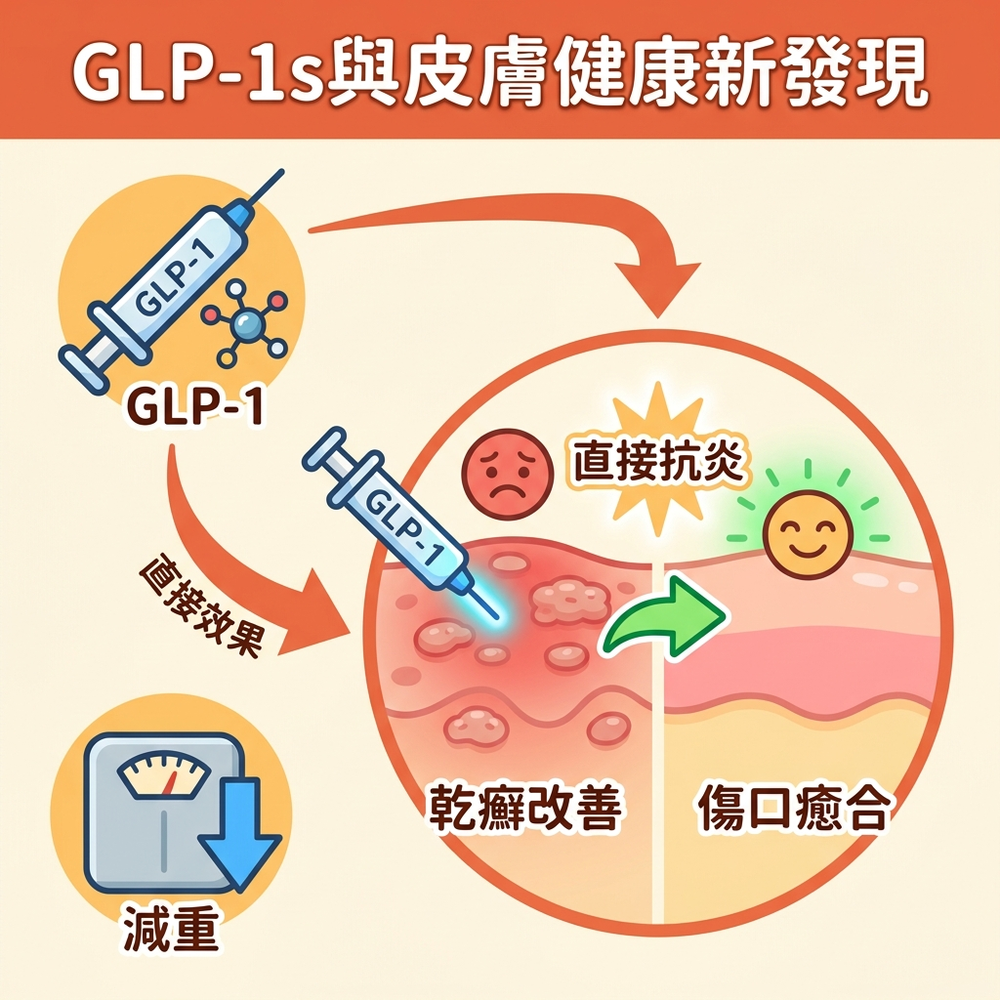

【醫療新知】GLP-1 藥物不只減重？可能「直接」改善乾癬等皮膚發炎
━━━━━━━━━━━━━━━━━━━━━━━
類型：醫療新知（整理自公開醫療新聞報導與研究摘要）
主題：GLP-1 受體促效劑 × 皮膚疾病
提及研究者：Dr. Joe K. Tung（UPMC 匹茲堡大學醫學中心，皮膚科）、Dr. Ravi Ramessur（賓州大學）
━━━━━━━━━━━━━━━━━━━━━━━
▎顛覆傳統認知的觀察
你可能知道 GLP-1 藥物能幫助減重，但你聽過它也能改善皮膚病嗎？
過去醫學界認為，GLP-1 藥物對皮膚的好處主要來自「減重後身體發炎減少」。但近期醫師觀察到更複雜的現象——效果快到不像單純減重能解釋。
━━━━━━━━━━━━━━━━━━━━━━━
▎「兩天內融化消失」：太快了，不像減重
・在匹茲堡大學醫學中心（UPMC），皮膚科醫師 Joe K. Tung 觀察到：部分乾癬患者「剛開始」使用 GLP-1 藥物後，皮膚斑塊竟在短短兩天內明顯消退。
・他認為這個速度太快，不可能是單純減重帶來的效果。
━━━━━━━━━━━━━━━━━━━━━━━
▎不只是「瘦下來消炎」：可能直接作用於皮膚免疫
① 早在 2011 年就有研究指出，GLP-1 藥物能「直接」在皮膚的免疫細胞（T 細胞）中產生抗發炎反應。
② Tung 醫師自己的研究顯示：GLP-1 療法可能降低第二型糖尿病患者罹患乾癬與化膿性汗腺炎的風險。
③ 賓州大學 Ravi Ramessur 醫師的基因分析發現：天生 GLP-1 受體活性較高的人，罹患乾癬與乾癬性關節炎的風險顯著較低——而且這與體脂肪的影響「無關」。
→ 這代表 GLP-1 藥物可能透過「直接作用於皮膚」來對抗發炎，而不僅僅是透過減重。
━━━━━━━━━━━━━━━━━━━━━━━
▎除了乾癬，初步證據也指向這些皮膚問題
▸ 化膿性汗腺炎（HS）
・可能幫助減少疼痛的腫塊，並調節皮脂腺
・減重也能減輕皮膚摩擦，改善症狀
▸ 異位性皮膚炎
・有觀察性研究指出患者對類固醇的需求減少
・但也有其他研究結果不一致
▸ 傷口癒合
・多項早期研究表明 GLP-1 藥物可能加速傷口癒合
・而且這與減重無關
━━━━━━━━━━━━━━━━━━━━━━━
▎現階段結論
・以上都還是「早期發現」。
・未來仍需要更多「專門針對皮膚疾病」設計的臨床試驗，才能釐清 GLP-1 藥物在皮膚健康上的真正潛力。
・如果您有相關疑問或正考慮使用藥物，務必諮詢專業醫師的建議。
━━━━━━━━━━━━━━━━━━━━━━━
▎簡易重點
① GLP-1 藥物可能不只助減重，還能「直接」改善皮膚發炎問題，如乾癬。
② 乾癬患者使用後，皮膚症狀可能在短短兩天內迅速改善——快到不像單純減重造成。
③ 對化膿性汗腺炎與傷口癒合也可能有效；但對異位性皮膚炎目前結果不一。
━━━━━━━━━━━━━━━━━━━━━━━
⚠ 本文為醫療新知整理，內容依公開新聞報導與研究摘要編寫，屬早期研究發現，僅供衛教與學術參考，不構成診斷、治療或用藥建議。GLP-1 藥物之使用（含適應症外用途）請務必諮詢您的主治醫師。